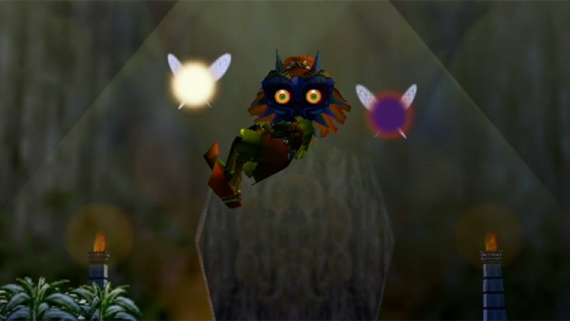

DECOUVREZ UN NOUVEL UNIVERS
Termina est un univers glauque, anxiogène et terrifiant, plus noir et plus torturé que les précédents jeux
de la franchise. Ce monde est dominé par une lune anthropomorphique affichant un visage au regard
menaçant. Le cycle de temps représenté par les trois jours avant la destruction de Termina procure un
stress et une ambiance inédite dans la série28. L'ambiance n'est pas la plus chaleureuse dans cet univers
parallèle dont même le nom « Termina » résonne comme une mise en garde, comme l'annonce d'une fin.
L'ambiance étrange est délibérément renforcée par certains effets, comme la cinématique affichant un effet
de flou et de distorsion lorsque Link se transforme en Peste Mojo
Decouvrez des paysages et ennemis diversifiers


